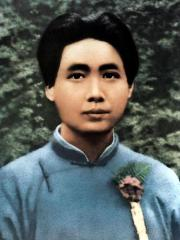
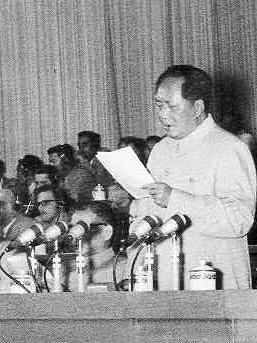
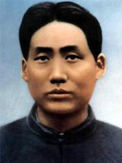
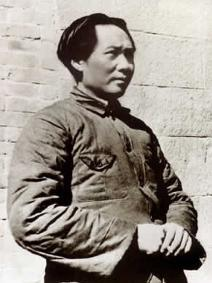

was born on December 26 in Shaoshanchong, Xiangtan county, Hunan province, to a peasant family.
studying in six private schools in Shaoshan, my hometown, and receiving the traditional Chinese enlightenment education.
in autumn, she was admitted to Li Dongshan primary school in Hunan Xiangxiang county to study. During this period, he was influenced by Kang Youwei and Liang Qichao's reformist thoughts.
in spring, he went to Changsha and was admitted to Hunan township's middle school in the province. During this period, I read the "People's Daily" run by the Alliance Association. Influenced by it, I wrote an article expressing my support for Sun Yat-sen and the Alliance Association's program.
in October, in response to the 1911 revolution, he joined the army and became a private soldier in Hunan's new army. Quit in six months.
in spring, I went to Hunan no 4 normal school for preparatory study.
in autumn, he was enrolled in class 8 of Hunan no 1 normal school. During his stay in school, influenced by progressive teachers such as Yang Changji, he became an enthusiastic reader of New Youth magazine and worshipped Chen Duxiu and Hu Shi.
On April 14, Xinmin Society was established with Xiao Zisheng, He Shuheng and Cai Hesen.
in June, he graduated from Hunan no 1 normal school.
in August, it was the first time for Hunan to go to Beijing to organize a work-study program in France. During his stay in Beijing, he served as the librarian of Peking University, and with the help of Li Dazhao and others, he began to accept the ideological influence of Russia's October Revolution.
returned to Changsha from Shanghai on April 6.
in may, in response to the may 4th movement, Hunan students' Federation was established to lead the anti-imperialist and patriotic movement of Hunan students.
on July 14, Xiangjiang river review, the magazine of Hunan student union, was first published in Changsha. From July to August, he wrote and published a long article on "the great unity of the people".
on October 5, Wen's mother died of illness and Wen Xun returned to Shaoshan from Changsha. On the 8th, it was written in front of the mother's spirit as a "funeral oration".
in December, he came to Beijing for the second time to lead the movement to expel Hunan warlord Zhang Jingyao. During my stay in Beijing, I read Marxist books such as the Communist Manifesto.
in may and June, I met Chen Duxiu in Shanghai to discuss the Marxist books and other issues he had read.
in early August, yi lirong and others launched a cultural book club in Changsha to spread Marxism and new culture.
from August to September, participated in the preparation for the establishment of the Russian research society.
On November 25, I wrote to Luo Zhanglong, proposing that Xinmin Society "should become a combination of socialism. Doctrine is like a flag. When the flag is raised, everyone will have hope and know where to go. "
In November, Changsha Communist Group was organized with He Shuheng and other organizations.
On December 1, I wrote to Cai Hesen, Xiao Zisheng and other members of the French Parliament. The letter showed that he accepted Marxism and took the road of Russia's October Revolution. Establishment of the Socialist Youth League in Changsha. Marry Yang Kaihui.
From January 1 to 3, with more than 10 people including He Shuheng, Peng Huang, Zhou Shizhao and Xiong Jinji, a New Year's Assembly of Xinmin Society members was held in Changsha Chaozong Street Cultural Publishing House. At the meeting, it was proposed that Xinmin Society should take "reforming China and the world" as its common goal and support the "Russian-style" method of reforming China.
From July 23 to early August, together with He Shuheng, they attended the First National Congress of the Communist Party of China held in Shanghai as representatives of the Changsha Communist Group.
in August, he returned to Changsha and became the director of Hunan branch of the secretary department of China labor union. He founded Hunan Self-study University with He Shuheng.
on October 10, the Hunan branch of the communist party of China was established as secretary.
in may, the CPC Hunan district executive Committee was established as secretary.
from September to December, it organized and led a series of strike movements such as Guangdong-Han railway workers, Anyuan railway miners and Changsha mud carpenters, which pushed the Hunan workers' movement to a rapid climax.
in April, she left Changsha and arrived in Shanghai to work in the CPC central Committee.
in June, he attended the third national congress of the communist party of China in Guangzhou and was elected as the central executive Committee member, central bureau member and secretary of the central bureau.
On September 16, following the decision of the Central Committee of the Communist Party of China and entrusted by Lin Boqu, deputy head of the general affairs department of the Kuomintang headquarters, he returned to Changsha to set up the Hunan Kuomintang organization.
in January, he attended the first national congress of the Chinese Kuomintang in Guangzhou and was elected as an alternate member of the central executive Committee.
in February, he went to Shanghai and served as a member of the Kuomintang's Shanghai executive department and secretary of the organization department.
in December, he returned to Hunan to recuperate.
in February, he returned to Shaoshan to recuperate and carry out the peasant movement.
in September, I went to Guangzhou to participate in the preparatory work for the second national congress of the Kuomintang.
in October, he served as acting minister of the propaganda department of the Kuomintang central Committee.
on December 1, an article entitled "analysis of various classes in Chinese society" was published.
on December 5, political weekly, the Kuomintang central propaganda department's chief editor, was first published.
in January, he attended the second national congress of the Chinese Kuomintang and continued to be elected as an alternate central executive member.
on March 18, he delivered a speech entitled "commemorating the significance of the Paris commune" at the rally commemorating the 55th anniversary of the Paris commune at the Guangzhou Kuomintang political workshop.
in March, Chiang kai-shek made the Zhongshan warship incident in Guangzhou and urged Zhou Enlai and others to fight back.
from may to September, he hosted the sixth Kuomintang peasant movement workshop and served as its director.
in November, he went to Shanghai to serve as secretary of the peasant movement Committee of the CPC central Committee. Soon arrived in Wuhan to set up the Kuomintang Central Peasant Movement Institute.
in December, I attended the first workers' congress and the first farmers' congress in Changsha.
from January 4 to February 5, we inspected the peasant movement in Xiangtan, Xiangxiang, Hengshan, Liling and Changsha counties.
in March, the investigation report of Hunan peasant movement was published. Attended the Third Plenary Session of the Second KMT Central Committee in Wuhan.
on April 12, Chiang kai-shek launched a counter-revolutionary coup in Shanghai.
from April 27 to may 10, he attended the fifth national congress of the communist party of China and was elected as an alternate member of the central executive Committee. The meeting criticized Chen Duxiu's right deviation.
on July 15, Wang ching-Wei launched a counter-revolutionary coup in Wuhan. the two countries merged and the great revolution failed.
on August 1, Nanchang uprising broke out. With Song Qingling and other 22 Kuomintang central committee members jointly issued the "Declaration of the Central Committee", condemning Chiang Kai-shek and Wang Ching-wei for betraying the national revolution.
on August 7, he attended an emergency meeting of the central Committee of the communist party of China held in Hankou, put forward the idea that political power comes from the barrel of a gun, and was elected as an alternate member of the political bureau of the interim central Committee. After the meeting, he went to Hunan to lead the autumn harvest uprising on the Hunan-Jiangxi border.
On September 9, the autumn harvest uprising broke out on the Hunan-Jiangxi border. On his way to the Xiao Family Temple in Tonggu, Jiangxi Province, he was caught by the Qingxiang team of the regiment's defense bureau when passing through the Zhang Family Square in Liuyang. He escaped cleverly on the way.
in September, after the setback of the autumn harvest uprising, the uprising troops marched towards the middle section of the luoxiao mountain range.
In October, he arrived in Mao Ping, Ninggang County, Jiangxi Province and began to establish Jinggangshan Revolutionary Base.
in November, he was wrongly accused by the political bureau of the interim central Committee of the communist party of China and was dismissed as an alternate member of the political bureau.
in April, his department joined forces with the rest of the Nanchang uprising army led by Zhu de and Chen yi and the southern Hunan uprising peasant army in Longshi, Ninggang county, Jiangxi province.
in may, he served as the party representative and secretary of the military Commission of the fourth army of the workers' and peasants' revolutionary army (later renamed the Chinese red army) formed by the two armies.
in July, he was elected to the central Committee at the sixth national congress of the communist party of China.
in October, a resolution was drafted for the second congress of the communist party of China on the Hunan-Jiangxi border, proposing the idea of "armed separatist regime of workers and peasants".
on November 25, he wrote a report to the central Committee on behalf of the front Committee of the fourth red army of the communist party of China, summarizing the experience of the independent regime of workers and peasants in Jinggangshan.
in December, he presided over the formulation of Jinggangshan land law.
in January, with Zhu de and Chen yi leading the main forces of the red fourth army, they marched to southern Jiangxi and western Fujian. by the spring of 1930, two revolutionary bases in southern Jiangxi and western Fujian had taken shape.
in April, he presided over the formulation of the land law of Xingguo.
in June, attending the seventh congress of the fourth red army of the communist party of China held in Longyan, correct opinions on the tasks, political work and military work of the red army were not accepted, and the former secretary of the front Committee appointed by the central Committee of the communist party of China was replaced by another person. After the meeting, he left the main leading post of the fourth red army and went to west Fujian to recuperate and guide local work.
In July, he directed the convening of the first congress of the CPC in western Fujian.
in September, the central Committee of the communist party of China issued an instruction letter to the front Committee of the fourth red army, affirming Mao Zedong's correct proposition on the red army's operational strategy and building a strong people's revolutionary army.
in December, the ninth congress of the fourth red army of the communist party of China was held in Gutian village, shanghang county, Fujian province, where political reports were made and resolutions of the congress (i.e Gutian meeting resolutions) were drafted.
in January, I wrote an article entitled "a single spark can start a prairie fire", explaining the theory of China's revolutionary road of encircling cities from the countryside and seizing power by armed force.
in may, a survey was conducted in Jiangxi province. At the same time, he wrote the article "Opposing Benben Doctrine" and proposed that "there is no investigation and no right to speak".
in August, he served as the general political member of the first red army and the secretary of the Committee of former enemies of the communist party of China.
in September, he was elected an alternate member of the political bureau at the third plenary session of the sixth central Committee of the communist party of China.
from December 30 to January 3 of the following year, with Zhu de and other commanders, the red army smashed the Kuomintang army's first "encirclement and suppression" campaign.